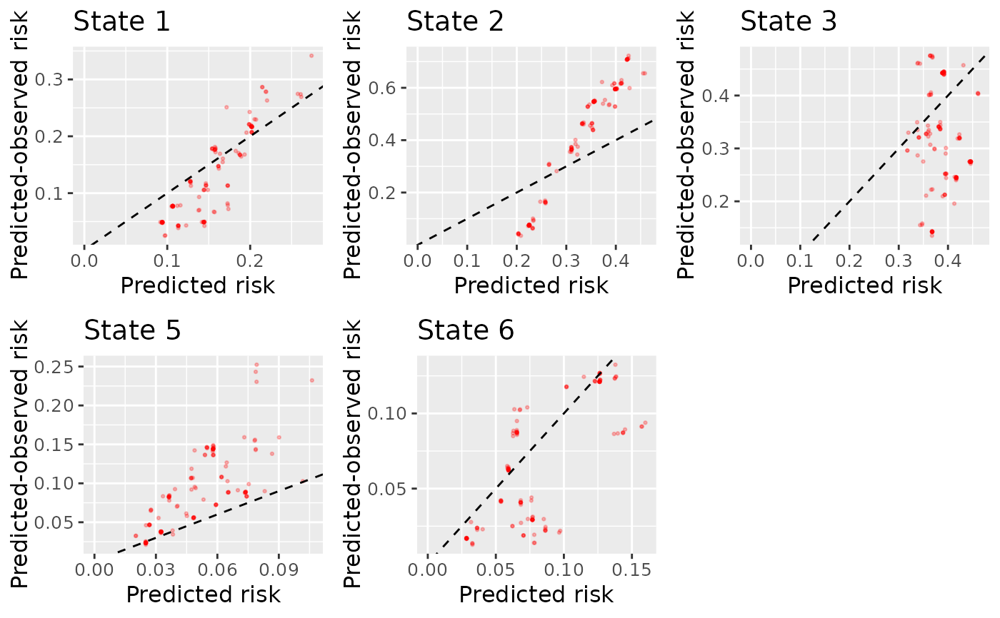

Plots calibration scatter plots for objects of class calib_mlr estimated using using calib_msm.
plot.calib_mlr.RdPlots calibration scatter plots for the transition probabilities of a multistate model estimated using the MLR-IPCW approach.
Usage
# S3 method for class 'calib_mlr'
plot(
x,
...,
combine = TRUE,
ncol = NULL,
nrow = NULL,
size_point = 0.5,
size_text = 12,
transparency_plot = 0.25,
marg_density = FALSE,
marg_density_size = 5,
marg_density_type = "density",
marg_rug = FALSE,
marg_rug_transparency = 0.1,
titles_include = TRUE,
titles = NULL,
axis_titles_x = NULL,
axis_titles_text_x = "Predicted risk",
axis_titles_y = NULL,
axis_titles_text_y = "Predicted-observed risk"
)Arguments
- x
Object of class
calib_mlrgenerated fromcalib_msm- ...
Other
- combine
Whether to combine into one plot using ggarrange, or return as a list of individual plots
- ncol
Number of columns for combined calibration plot
- nrow
Number of rows for combined calibration plot
- size_point
Size of points in scatter plot
- size_text
Size of text in plot
- transparency_plot
Degree of transparency for points in the calibration scatter plot
- marg_density
Whether to produce marginal density plots TRUE/FALSE
- marg_density_size
Size of the main plot relative to the density plots (see
ggMarginal)- marg_density_type
What type of marginal plot to show (see
ggMarginal)- marg_rug
Whether to produce marginal rug plots TRUE/FALSE
- marg_rug_transparency
Degree of transparency for the density rug plot along each axis
- titles_include
Whether to include titles for each individual calibration plots
- titles
Vector of titles for the calibration plots_ Defaults to "State k" for each plot_
- axis_titles_x
Position of plots for which to include title on x-axis
- axis_titles_text_x
x-axis title
- axis_titles_y
Position of plots for which to include title on y-axis
- axis_titles_text_y
y-axis title
Value
If combine = TRUE, returns an object of classes gg, ggplot, and ggarrange,
as all ggplots have been combined into one object. If combine = FALSE, returns an object of
class list, each element containing an object of class gg and ggplot.
Examples
# Using competing risks data out of initial state (see vignette: ... -in-competing-risk-setting).
# Estimate and plot MLR-IPCW calibration scatter plots for the predicted transition
# probabilities at time t = 1826, when predictions were made at time
# s = 0 in state j = 1. These predicted transition probabilities are stored in tp_cmprsk_j0.
# To minimise example time we reduce the datasets to 150 individuals.
# Extract the predicted transition probabilities out of state j = 1 for first 150 individuals
tp_pred <- tp_cmprsk_j0 |>
dplyr::filter(id %in% 1:150) |>
dplyr::select(any_of(paste("pstate", 1:6, sep = "")))
# Reduce ebmtcal to first 150 individuals
ebmtcal <- ebmtcal |> dplyr::filter(id %in% 1:150)
# Reduce msebmtcal_cmprsk to first 150 individuals
msebmtcal_cmprsk <- msebmtcal_cmprsk |> dplyr::filter(id %in% 1:150)
# Now estimate the observed event probabilities for each possible transition.
dat_calib <-
calib_msm(data_ms = msebmtcal_cmprsk,
data_raw = ebmtcal,
j=1,
s=0,
t = 1826,
tp_pred = tp_pred,
calib_type = "mlr",
w_covs = c("year", "agecl", "proph", "match"),
mlr_ps_int = 2,
mlr_degree = 2)
#> Warning: In the landmark cohort of individuals uncensored and in state j at time s,
#> there are some states have less than 30 people in them at the time calibration is being assessed (t).
#> Warnings and errors may occur when the models to estimate the calibration curves are fitted, due to small sample size.
#> The number to flag this warning (30) has been chosen arbitrarily, and does not constitute a sufficient sample size from a statistical point of view.
# These are then plotted
plot(dat_calib, combine = TRUE, nrow = 2, ncol = 3)
